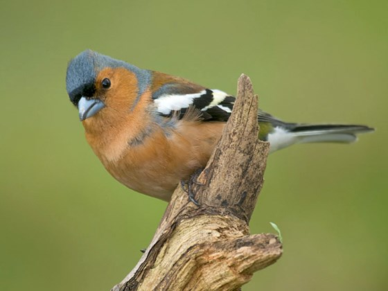

The Chaffinch is our commonest finch and has striking double white wing bars.
The wing bars are formed by white patches on the wing coverts, and primary and
secondary wing feathers. Its summer plumage is brighter that its winter plumage.
The male Chaffinch has a pink breast and cheeks, blue-grey crown and nape, and
chestnut brown back. In summer, its bill is grey-blue, turning to pale brown in the winter.
The female has an olive-brown back, and grey-brown underparts becoming almost white
towards the rump, which is greenish. The juveniles are similar to the female but lack
the greenish rump. The bill is brown in both the female and juveniles.
The chaffinch is one of the most widespread and abundant bird in Britian and Ireland.
Its patterned plumage helps it to blend in when feeding on the ground and it becomes
most obvious when it flies, revealing a flash of white on the wings and white outer tail
feathers. It does not feed openly on bird feeders - it prefers to hop about under the
bird table or under the hedge. You'll usually hear chaffinches before you see them,
with their loud song and varied calls.
Chaffinches usually feed on seeds and insects, like caterpillars, during the breeding season. Chaffinches are not so keen on using hanging feeders and generally prefer to shuffle around on the ground, foraging for spilt seed (sunflower seeds and hearts) from that other birds have dropped.
Woodland Farmland Grassland Heathland Urban and suburban.
Chaffinches can be seen around the UK in woodlands, hedgerows, fields, parks and gardens anywhere.
Chaffinches can be seen all year round.